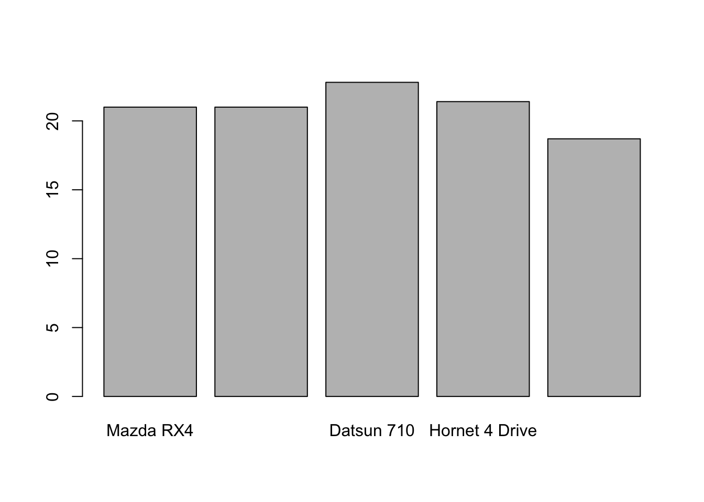
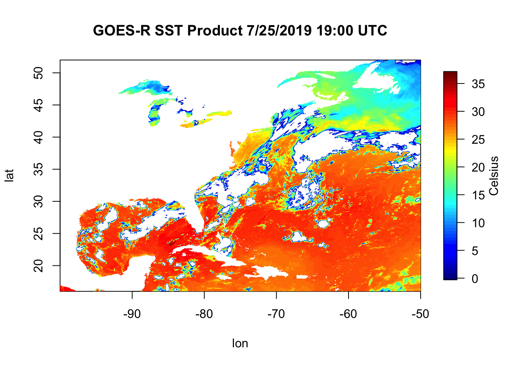

4 Example Scripts
In this example, we’ll begin with data science question and answer it in R. We’ll go through these scripts line by line to show how we can use R. To follow along, copy each of these lines and paste them in your R Script (top left quadrant). Once it’s pasted there, we can run each line and view the output in the R Console (bottom left quadrant).
4.1 Global Carbon-Dioxide Concentrations
CO2 is a greenhouse gas responsible for trapping heat. Human’s have released more CO2 into the atmosphere through industrialism. How have global carbon-dioxide (CO2) concentrations changed over time?
First, we load the dataset. In our case, the dataset we’ll be using is pre-built into R as co2, meaning we don’t need to download this dataset, we just need to call it. The co2 dataset contains atmospheric concentrations of CO2 are expressed in parts per million (ppm). This data is a time-series of monthly CO2 concentrations recorded between 1959 and 1997. First, let’s make sure the pre-built data is installed correcly.
## Jan Feb Mar Apr May Jun Jul Aug Sep Oct
## 1959 315.42 316.31 316.50 317.56 318.13 318.00 316.39 314.65 313.68 313.18
## 1960 316.27 316.81 317.42 318.87 319.87 319.43 318.01 315.74 314.00 313.68
## 1961 316.73 317.54 318.38 319.31 320.42 319.61 318.42 316.63 314.83 315.16
## 1962 317.78 318.40 319.53 320.42 320.85 320.45 319.45 317.25 316.11 315.27
## 1963 318.58 318.92 319.70 321.22 322.08 321.31 319.58 317.61 316.05 315.83
## 1964 319.41 320.07 320.74 321.40 322.06 321.73 320.27 318.54 316.54 316.71
## 1965 319.27 320.28 320.73 321.97 322.00 321.71 321.05 318.71 317.66 317.14
## 1966 320.46 321.43 322.23 323.54 323.91 323.59 322.24 320.20 318.48 317.94
## 1967 322.17 322.34 322.88 324.25 324.83 323.93 322.38 320.76 319.10 319.24
## 1968 322.40 322.99 323.73 324.86 325.40 325.20 323.98 321.95 320.18 320.09
## 1969 323.83 324.26 325.47 326.50 327.21 326.54 325.72 323.50 322.22 321.62
## 1970 324.89 325.82 326.77 327.97 327.91 327.50 326.18 324.53 322.93 322.90
## 1971 326.01 326.51 327.01 327.62 328.76 328.40 327.20 325.27 323.20 323.40
## 1972 326.60 327.47 327.58 329.56 329.90 328.92 327.88 326.16 324.68 325.04
## 1973 328.37 329.40 330.14 331.33 332.31 331.90 330.70 329.15 327.35 327.02
## 1974 329.18 330.55 331.32 332.48 332.92 332.08 331.01 329.23 327.27 327.21
## 1975 330.23 331.25 331.87 333.14 333.80 333.43 331.73 329.90 328.40 328.17
## 1976 331.58 332.39 333.33 334.41 334.71 334.17 332.89 330.77 329.14 328.78
## 1977 332.75 333.24 334.53 335.90 336.57 336.10 334.76 332.59 331.42 330.98
## 1978 334.80 335.22 336.47 337.59 337.84 337.72 336.37 334.51 332.60 332.38
## 1979 336.05 336.59 337.79 338.71 339.30 339.12 337.56 335.92 333.75 333.70
## 1980 337.84 338.19 339.91 340.60 341.29 341.00 339.39 337.43 335.72 335.84
## 1981 339.06 340.30 341.21 342.33 342.74 342.08 340.32 338.26 336.52 336.68
## 1982 340.57 341.44 342.53 343.39 343.96 343.18 341.88 339.65 337.81 337.69
## 1983 341.20 342.35 342.93 344.77 345.58 345.14 343.81 342.21 339.69 339.82
## 1984 343.52 344.33 345.11 346.88 347.25 346.62 345.22 343.11 340.90 341.18
## 1985 344.79 345.82 347.25 348.17 348.74 348.07 346.38 344.51 342.92 342.62
## 1986 346.11 346.78 347.68 349.37 350.03 349.37 347.76 345.73 344.68 343.99
## 1987 347.84 348.29 349.23 350.80 351.66 351.07 349.33 347.92 346.27 346.18
## 1988 350.25 351.54 352.05 353.41 354.04 353.62 352.22 350.27 348.55 348.72
## 1989 352.60 352.92 353.53 355.26 355.52 354.97 353.75 351.52 349.64 349.83
## 1990 353.50 354.55 355.23 356.04 357.00 356.07 354.67 352.76 350.82 351.04
## 1991 354.59 355.63 357.03 358.48 359.22 358.12 356.06 353.92 352.05 352.11
## 1992 355.88 356.63 357.72 359.07 359.58 359.17 356.94 354.92 352.94 353.23
## 1993 356.63 357.10 358.32 359.41 360.23 359.55 357.53 355.48 353.67 353.95
## 1994 358.34 358.89 359.95 361.25 361.67 360.94 359.55 357.49 355.84 356.00
## 1995 359.98 361.03 361.66 363.48 363.82 363.30 361.94 359.50 358.11 357.80
## 1996 362.09 363.29 364.06 364.76 365.45 365.01 363.70 361.54 359.51 359.65
## 1997 363.23 364.06 364.61 366.40 366.84 365.68 364.52 362.57 360.24 360.83
## Nov Dec
## 1959 314.66 315.43
## 1960 314.84 316.03
## 1961 315.94 316.85
## 1962 316.53 317.53
## 1963 316.91 318.20
## 1964 317.53 318.55
## 1965 318.70 319.25
## 1966 319.63 320.87
## 1967 320.56 321.80
## 1968 321.16 322.74
## 1969 322.69 323.95
## 1970 323.85 324.96
## 1971 324.63 325.85
## 1972 326.34 327.39
## 1973 327.99 328.48
## 1974 328.29 329.41
## 1975 329.32 330.59
## 1976 330.14 331.52
## 1977 332.24 333.68
## 1978 333.75 334.78
## 1979 335.12 336.56
## 1980 336.93 338.04
## 1981 338.19 339.44
## 1982 339.09 340.32
## 1983 340.98 342.82
## 1984 342.80 344.04
## 1985 344.06 345.38
## 1986 345.48 346.72
## 1987 347.64 348.78
## 1988 349.91 351.18
## 1989 351.14 352.37
## 1990 352.69 354.07
## 1991 353.64 354.89
## 1992 354.09 355.33
## 1993 355.30 356.78
## 1994 357.59 359.05
## 1995 359.61 360.74
## 1996 360.80 362.38
## 1997 362.49 364.34This dataset is stored in R as co2. We can create a new variable called co2_data that replicates this co2 dataset.
## Jan Feb Mar Apr May Jun Jul Aug Sep Oct
## 1959 315.42 316.31 316.50 317.56 318.13 318.00 316.39 314.65 313.68 313.18
## 1960 316.27 316.81 317.42 318.87 319.87 319.43 318.01 315.74 314.00 313.68
## 1961 316.73 317.54 318.38 319.31 320.42 319.61 318.42 316.63 314.83 315.16
## 1962 317.78 318.40 319.53 320.42 320.85 320.45 319.45 317.25 316.11 315.27
## 1963 318.58 318.92 319.70 321.22 322.08 321.31 319.58 317.61 316.05 315.83
## 1964 319.41 320.07 320.74 321.40 322.06 321.73 320.27 318.54 316.54 316.71
## 1965 319.27 320.28 320.73 321.97 322.00 321.71 321.05 318.71 317.66 317.14
## 1966 320.46 321.43 322.23 323.54 323.91 323.59 322.24 320.20 318.48 317.94
## 1967 322.17 322.34 322.88 324.25 324.83 323.93 322.38 320.76 319.10 319.24
## 1968 322.40 322.99 323.73 324.86 325.40 325.20 323.98 321.95 320.18 320.09
## 1969 323.83 324.26 325.47 326.50 327.21 326.54 325.72 323.50 322.22 321.62
## 1970 324.89 325.82 326.77 327.97 327.91 327.50 326.18 324.53 322.93 322.90
## 1971 326.01 326.51 327.01 327.62 328.76 328.40 327.20 325.27 323.20 323.40
## 1972 326.60 327.47 327.58 329.56 329.90 328.92 327.88 326.16 324.68 325.04
## 1973 328.37 329.40 330.14 331.33 332.31 331.90 330.70 329.15 327.35 327.02
## 1974 329.18 330.55 331.32 332.48 332.92 332.08 331.01 329.23 327.27 327.21
## 1975 330.23 331.25 331.87 333.14 333.80 333.43 331.73 329.90 328.40 328.17
## 1976 331.58 332.39 333.33 334.41 334.71 334.17 332.89 330.77 329.14 328.78
## 1977 332.75 333.24 334.53 335.90 336.57 336.10 334.76 332.59 331.42 330.98
## 1978 334.80 335.22 336.47 337.59 337.84 337.72 336.37 334.51 332.60 332.38
## 1979 336.05 336.59 337.79 338.71 339.30 339.12 337.56 335.92 333.75 333.70
## 1980 337.84 338.19 339.91 340.60 341.29 341.00 339.39 337.43 335.72 335.84
## 1981 339.06 340.30 341.21 342.33 342.74 342.08 340.32 338.26 336.52 336.68
## 1982 340.57 341.44 342.53 343.39 343.96 343.18 341.88 339.65 337.81 337.69
## 1983 341.20 342.35 342.93 344.77 345.58 345.14 343.81 342.21 339.69 339.82
## 1984 343.52 344.33 345.11 346.88 347.25 346.62 345.22 343.11 340.90 341.18
## 1985 344.79 345.82 347.25 348.17 348.74 348.07 346.38 344.51 342.92 342.62
## 1986 346.11 346.78 347.68 349.37 350.03 349.37 347.76 345.73 344.68 343.99
## 1987 347.84 348.29 349.23 350.80 351.66 351.07 349.33 347.92 346.27 346.18
## 1988 350.25 351.54 352.05 353.41 354.04 353.62 352.22 350.27 348.55 348.72
## 1989 352.60 352.92 353.53 355.26 355.52 354.97 353.75 351.52 349.64 349.83
## 1990 353.50 354.55 355.23 356.04 357.00 356.07 354.67 352.76 350.82 351.04
## 1991 354.59 355.63 357.03 358.48 359.22 358.12 356.06 353.92 352.05 352.11
## 1992 355.88 356.63 357.72 359.07 359.58 359.17 356.94 354.92 352.94 353.23
## 1993 356.63 357.10 358.32 359.41 360.23 359.55 357.53 355.48 353.67 353.95
## 1994 358.34 358.89 359.95 361.25 361.67 360.94 359.55 357.49 355.84 356.00
## 1995 359.98 361.03 361.66 363.48 363.82 363.30 361.94 359.50 358.11 357.80
## 1996 362.09 363.29 364.06 364.76 365.45 365.01 363.70 361.54 359.51 359.65
## 1997 363.23 364.06 364.61 366.40 366.84 365.68 364.52 362.57 360.24 360.83
## Nov Dec
## 1959 314.66 315.43
## 1960 314.84 316.03
## 1961 315.94 316.85
## 1962 316.53 317.53
## 1963 316.91 318.20
## 1964 317.53 318.55
## 1965 318.70 319.25
## 1966 319.63 320.87
## 1967 320.56 321.80
## 1968 321.16 322.74
## 1969 322.69 323.95
## 1970 323.85 324.96
## 1971 324.63 325.85
## 1972 326.34 327.39
## 1973 327.99 328.48
## 1974 328.29 329.41
## 1975 329.32 330.59
## 1976 330.14 331.52
## 1977 332.24 333.68
## 1978 333.75 334.78
## 1979 335.12 336.56
## 1980 336.93 338.04
## 1981 338.19 339.44
## 1982 339.09 340.32
## 1983 340.98 342.82
## 1984 342.80 344.04
## 1985 344.06 345.38
## 1986 345.48 346.72
## 1987 347.64 348.78
## 1988 349.91 351.18
## 1989 351.14 352.37
## 1990 352.69 354.07
## 1991 353.64 354.89
## 1992 354.09 355.33
## 1993 355.30 356.78
## 1994 357.59 359.05
## 1995 359.61 360.74
## 1996 360.80 362.38
## 1997 362.49 364.34We replicate this dataset and rename it as co2_data so that it’s a variable that is shown in our global environment (top right quadrant).
What class is this data?
## [1] "ts"A ts class is a time-series class. We can print out a summary of the co2 dataset like so.
## Min. 1st Qu. Median Mean 3rd Qu. Max.
## 313.2 323.5 335.2 337.1 350.3 366.8The summary() function is a base function R offers for quick statistics.
How long is this dataset?
## [1] 468468 months worth of CO2 observations.
Can we plot this dataset?

Altogether, this script looks like this…
# make sure the dataset is loaded - it's a prebuilt dataset automatically loaded into R
co2
# rename the dataset as co2_data so it is visible in our global environment
co2_data <- co2
co2_data
# identify the class of the co2_data object
class(co2_data)
# print the summary of the co2_data dataset
summary(co2_data)
# find the length of the co2_data dataset using the length() function
length(co2_data)
# plot the dataset using the default plot function
plot(x = co2, ylab = "Atmospheric concentration of CO2 (ppm)", main = "CO2 Dataset")Above is our script. We run this script in the console. We can save this script and re-run this at any time. An example of this would be saving this file as co2_script.R. Once this is saved, you can close R, re-open it, and re-run your co2_script.R without re-writing any code.
4.2 Cars - Motor Trends Magazine Data
The data was extracted from the 1974 Motor Trend US magazine, and comprises fuel consumption and 10 aspects of automobile design and performance for 32 automobiles (1973–74 models).
Load the dataset - again this is a pre-loaded dataset, but let’s call on it so we can bring it into our global environment.
## mpg cyl disp hp drat wt qsec vs am gear carb
## Mazda RX4 21.0 6 160 110 3.90 2.620 16.46 0 1 4 4
## Mazda RX4 Wag 21.0 6 160 110 3.90 2.875 17.02 0 1 4 4
## Datsun 710 22.8 4 108 93 3.85 2.320 18.61 1 1 4 1
## Hornet 4 Drive 21.4 6 258 110 3.08 3.215 19.44 1 0 3 1
## Hornet Sportabout 18.7 8 360 175 3.15 3.440 17.02 0 0 3 2
## Valiant 18.1 6 225 105 2.76 3.460 20.22 1 0 3 1The head() function is a quick function that prints out the first few rows of a dataset.
What’s exactly is mtcars?
## [1] "data.frame"It’s a data.frame. Data Frames have a different storage than time series. You can also view this dataframe by clicking on the mtcars dataframe in your global environment. What are the dimensions of this dataframe? How many rows and columns does it have?
## [1] 32 11## [1] 32## [1] 11We have 32 rows and 11 columns within this dataframe.
What are our column names?
## [1] "mpg" "cyl" "disp" "hp" "drat" "wt" "qsec" "vs" "am" "gear"
## [11] "carb"What are our row names (aka the make of the car)?
## [1] "Mazda RX4" "Mazda RX4 Wag" "Datsun 710"
## [4] "Hornet 4 Drive" "Hornet Sportabout" "Valiant"
## [7] "Duster 360" "Merc 240D" "Merc 230"
## [10] "Merc 280" "Merc 280C" "Merc 450SE"
## [13] "Merc 450SL" "Merc 450SLC" "Cadillac Fleetwood"
## [16] "Lincoln Continental" "Chrysler Imperial" "Fiat 128"
## [19] "Honda Civic" "Toyota Corolla" "Toyota Corona"
## [22] "Dodge Challenger" "AMC Javelin" "Camaro Z28"
## [25] "Pontiac Firebird" "Fiat X1-9" "Porsche 914-2"
## [28] "Lotus Europa" "Ford Pantera L" "Ferrari Dino"
## [31] "Maserati Bora" "Volvo 142E"How do we extract individual columns/variables from this dataframe?
## mpg
## Mazda RX4 21.0
## Mazda RX4 Wag 21.0
## Datsun 710 22.8
## Hornet 4 Drive 21.4
## Hornet Sportabout 18.7
## Valiant 18.1
## Duster 360 14.3
## Merc 240D 24.4
## Merc 230 22.8
## Merc 280 19.2
## Merc 280C 17.8
## Merc 450SE 16.4
## Merc 450SL 17.3
## Merc 450SLC 15.2
## Cadillac Fleetwood 10.4
## Lincoln Continental 10.4
## Chrysler Imperial 14.7
## Fiat 128 32.4
## Honda Civic 30.4
## Toyota Corolla 33.9
## Toyota Corona 21.5
## Dodge Challenger 15.5
## AMC Javelin 15.2
## Camaro Z28 13.3
## Pontiac Firebird 19.2
## Fiat X1-9 27.3
## Porsche 914-2 26.0
## Lotus Europa 30.4
## Ford Pantera L 15.8
## Ferrari Dino 19.7
## Maserati Bora 15.0
## Volvo 142E 21.4We can also extract the vector of data using the $ operator.
## [1] 21.0 21.0 22.8 21.4 18.7 18.1 14.3 24.4 22.8 19.2 17.8 16.4 17.3 15.2 10.4
## [16] 10.4 14.7 32.4 30.4 33.9 21.5 15.5 15.2 13.3 19.2 27.3 26.0 30.4 15.8 19.7
## [31] 15.0 21.4What are the statistics like for each variable?
## mpg cyl disp hp
## Min. :10.40 Min. :4.000 Min. : 71.1 Min. : 52.0
## 1st Qu.:15.43 1st Qu.:4.000 1st Qu.:120.8 1st Qu.: 96.5
## Median :19.20 Median :6.000 Median :196.3 Median :123.0
## Mean :20.09 Mean :6.188 Mean :230.7 Mean :146.7
## 3rd Qu.:22.80 3rd Qu.:8.000 3rd Qu.:326.0 3rd Qu.:180.0
## Max. :33.90 Max. :8.000 Max. :472.0 Max. :335.0
## drat wt qsec vs
## Min. :2.760 Min. :1.513 Min. :14.50 Min. :0.0000
## 1st Qu.:3.080 1st Qu.:2.581 1st Qu.:16.89 1st Qu.:0.0000
## Median :3.695 Median :3.325 Median :17.71 Median :0.0000
## Mean :3.597 Mean :3.217 Mean :17.85 Mean :0.4375
## 3rd Qu.:3.920 3rd Qu.:3.610 3rd Qu.:18.90 3rd Qu.:1.0000
## Max. :4.930 Max. :5.424 Max. :22.90 Max. :1.0000
## am gear carb
## Min. :0.0000 Min. :3.000 Min. :1.000
## 1st Qu.:0.0000 1st Qu.:3.000 1st Qu.:2.000
## Median :0.0000 Median :4.000 Median :2.000
## Mean :0.4062 Mean :3.688 Mean :2.812
## 3rd Qu.:1.0000 3rd Qu.:4.000 3rd Qu.:4.000
## Max. :1.0000 Max. :5.000 Max. :8.000Notice that now the summary() function is printing out the summary statistics for each column (aka variable) within our dataframe (mtcars)
What if we just wanted to focus on the first 5 cars in the dataset? We need to index.
## mpg cyl disp hp drat wt qsec vs am gear carb
## Mazda RX4 21.0 6 160 110 3.90 2.620 16.46 0 1 4 4
## Mazda RX4 Wag 21.0 6 160 110 3.90 2.875 17.02 0 1 4 4
## Datsun 710 22.8 4 108 93 3.85 2.320 18.61 1 1 4 1
## Hornet 4 Drive 21.4 6 258 110 3.08 3.215 19.44 1 0 3 1
## Hornet Sportabout 18.7 8 360 175 3.15 3.440 17.02 0 0 3 2Remember, data is stored as Row, Column. Above, we’re indexing the first 5 rows and then including all columns. What if we just wanted to focus on the first column?
## [1] 21.0 21.0 22.8 21.4 18.7That’s the mpg column of the first 5 cars. Which car has the best miles per gallon (mpg)?

The Datsun 710 has the highest MPG rating of the first 5 cars (rows) in the dataset.
The entire script looks like this:
# load the data - the mtcars dataset is pre-built
data('mtcars')
# print out the first few rows of the dataset using the head() function
head(mtcars)
# print the class of the mtcars dataset
class(mtcars)
# dimensions of the mtcars dataframe
dim(mtcars)
# number of rows
nrow(mtcars)
# number of columns
ncol(mtcars)
# column names
colnames(mtcars)
# row names
rownames(mtcars)
# selecting the miles per gallon column
mtcars["mpg"]
# selecting the vector of the mpg column
mtcars$mpg
# printing a summary of the dataframe
summary(mtcars)
# indexing the first 5 rows, including all of the columns
mtcars[1:5,]
# indexing the first 5 rows and the 1st column
mtcars[1:5,1]
# creating a barplot of mpg for the first 5 cars
barplot(height = mtcars$mpg[1:5], names.arg = rownames(mtcars)[1:5])4.3 How does an R script generally flow?
Now it’s time to get your hands dirty. We can sit and chat about all these things R can do and how to do them, but you won’t retain that information until you use R yourself. This will be confusing at first if you’re new to this type of programming, but the longer you spend with it, the more sense it will make.
A typical R script will generally look like this:
# James Simkins
# Load libraries
library(ncdf4)
library(fields)
ncFile <- ncdf4::nc_open("~/Documents/Github/geog473-673/datasets/OR_ABI-L2-SSTF-M3_G16_s20192081300453_e20192081400161_c20192081406297.nc")
sstK <- ncdf4::ncvar_get(nc=ncFile, varid="SST")
lat <- ncdf4::ncvar_get(nc=ncFile, varid="latitude")
lon <- ncdf4::ncvar_get(nc=ncFile, varid="longitude")
# convert sst from Kelvin to Celsius
sstC <- sstK - 273.15
# remove values below 0C
sstC[sstC < 0] = NA
# Plot the matrix
fields::image.plot(x=lon, y=lat, z=sstC, legend.lab="Celsius")
title("GOES-R SST Product 7/25/2019 19:00 UTC")
4.4 Now Let’s Break Down This Script
In R, we need to call on packages/libraries that we want to load in. We do this via the “library()” function or the “require()” function - both do the same thing. Notice that we do this at the beginning of the script because R reads line by line and we need these loaded before we can use the functions within the packages.
# Load libraries
library(ncdf4)
library(fields)
#######################################
ncFile <- ncdf4::nc_open(filename="~/Documents/Github/geog473-673/datasets/OR_ABI-L2-SSTF-M3_G16_s20192081300453_e20192081400161_c20192081406297.nc")
sstK <- ncdf4::ncvar_get(nc=ncFile, varid="SST")
lat <- ncdf4::ncvar_get(nc=ncFile, varid="latitude")
lon <- ncdf4::ncvar_get(nc=ncFile, varid="longitude")Object = something. In this case, object name is ncFile and it holds an opened NetCDF file. We open this file via the “nc_open” function that’s within the “ncdf4” library. Note the “ncdf4::” syntax. This is NOT necessary for coding in R. Once you load in the library, R knows what you mean when you type in a function such as “nc_open”. I added it here so you know where these functions are coming from.
Notice that I use “<-” for objects and “=” for arguments within the function. This is key, as I can use either “<-” or “=” for objects (like ncFile or sstK) but I MUST use “=” within the function ‘walls’ (the parantheses).
For those of you not used to NetCDF files, they’re an efficient filetype heavily used in physical sciences. Within each file, metadata (time, latitude info, longitude info, projection, etc.), and variables (sea surface temperature, latitude points, longitude points, chlorophyll, etc.) are stored in these. We open the netcdf file and then extract what we want out of it using “ncvar_get”, which is short for “netcdf variable get”. Confused about how to use ncvar_get? Try:
# Load libraries
library(ncdf4)
library(fields)
ncFile <- ncdf4::nc_open(filename="~/Documents/Github/geog473-673/datasets/OR_ABI-L2-SSTF-M3_G16_s20192081300453_e20192081400161_c20192081406297.nc")
sstK <- ncdf4::ncvar_get(nc=ncFile, varid="SST")
#######################################This is a really attractive feature within R and exists for every function within an official R library. Now, back to the script…
# Load libraries
library(ncdf4)
library(fields)
ncFile <- ncdf4::nc_open(filename="~/Documents/Github/geog473-673/datasets/OR_ABI-L2-SSTF-M3_G16_s20192081300453_e20192081400161_c20192081406297.nc")
sstK <- ncdf4::ncvar_get(nc=ncFile, varid="SST")
#######################################
# convert sst from Kelvin to Celsius
sstC <- sstK - 273.15The SST variable from the netCDF file was in Kelvin and we want to convert it to Celsius. Right now, sstK is a matrix. How do I know this? Look at your environment, or simply type into your console:
# Load libraries
library(ncdf4)
library(fields)
ncFile <- ncdf4::nc_open(filename="~/Documents/Github/geog473-673/datasets/OR_ABI-L2-SSTF-M3_G16_s20192081300453_e20192081400161_c20192081406297.nc")
sstK <- ncdf4::ncvar_get(nc=ncFile, varid="SST")
#######################################
class(sstK)## [1] "matrix"Class is a useful function that is loaded with the base library everytime you fire up R. It tells us what type of object we have. Now that we know this is a matrix, we can subtract 0 Celsius, or 273.15 Kelvin. When we have a matrix in R and perform any math on it, it does that math on each and every matrix value.
#Quick and Dirty Quality Control
There are bad values that crept into the dataset and we need to convert all of them to NaN (aka Not A Number…also known as NA (Not Available) in R). How do we know there are bad values in this dataset?
# Load libraries
library(ncdf4)
library(fields)
ncFile <- ncdf4::nc_open(filename="~/Documents/Github/geog473-673/datasets/OR_ABI-L2-SSTF-M3_G16_s20192081300453_e20192081400161_c20192081406297.nc")
sstK <- ncdf4::ncvar_get(nc=ncFile, varid="SST")
#######################################
summary(as.vector(sstK))## Min. 1st Qu. Median Mean 3rd Qu. Max. NA's
## -999.0 286.9 300.0 278.2 302.0 310.0 2175822summary() is another great base function. In order to use it on a matrix, we need to convert it to a vector - summary can’t do 2 dimensional objects like matrices, it needs a one dimensional vector of numbers. The “as.vector” function just says hey R read in sstK as a vector for me would ya? Notice the ‘Min’ in the summary output. -999? No way is that a valid Kelvin value, especially since we subtract another 273.15 to this number to make the the Celsius matrix. So clearly we have some bad data that we need to convert to NA’s. We do this by…
library(ncdf4)
library(fields)
ncFile <- ncdf4::nc_open("~/Documents/Github/geog473-673/datasets/OR_ABI-L2-SSTF-M3_G16_s20192081300453_e20192081400161_c20192081406297.nc")
sstK <- ncdf4::ncvar_get(nc=ncFile, varid="SST")
lat <- ncdf4::ncvar_get(nc=ncFile, varid="latitude")
lon <- ncdf4::ncvar_get(nc=ncFile, varid="longitude")
# convert sst from Kelvin to Celsius
sstC <- sstK - 273.15
# remove values below 0C
#######################################
sstC[sstC < 0] = NAThis line reads as: sstC where sstC is less than 0 equals NA. The brackets here can be thought of as the ‘condition’, that is what you’re looking to change. This is called a vector operation, which we will get more into later but these are important becuase it’s far faster to do this than a for loop.
library(ncdf4)
library(fields)
ncFile <- ncdf4::nc_open("~/Documents/Github/geog473-673/datasets/OR_ABI-L2-SSTF-M3_G16_s20192081300453_e20192081400161_c20192081406297.nc")
sstK <- ncdf4::ncvar_get(nc=ncFile, varid="SST")
lat <- ncdf4::ncvar_get(nc=ncFile, varid="latitude")
lon <- ncdf4::ncvar_get(nc=ncFile, varid="longitude")
# convert sst from Kelvin to Celsius
sstC <- sstK - 273.15
# remove values below 0C
#######################################
sstC[sstC < 0] = NA
summary(as.vector(sstC))## Min. 1st Qu. Median Mean 3rd Qu. Max. NA's
## 0.0 19.8 27.6 24.1 29.0 36.8 2679819Now we see that our summary looks good (even though we’re looking at a matrix in celsius now). So all that’s left to do is plot this up…
# James Simkins
# Load libraries
library(ncdf4)
library(fields)
ncFile <- ncdf4::nc_open("~/Documents/Github/geog473-673/datasets/OR_ABI-L2-SSTF-M3_G16_s20192081300453_e20192081400161_c20192081406297.nc")
sstK <- ncdf4::ncvar_get(nc=ncFile, varid="SST")
lat <- ncdf4::ncvar_get(nc=ncFile, varid="latitude")
lon <- ncdf4::ncvar_get(nc=ncFile, varid="longitude")
# convert sst from Kelvin to Celsius
sstC <- sstK - 273.15
# remove values below 0C
sstC[sstC < 0] = NA
#######################################
# Plot the matrix
fields::image.plot(x=lon, y=lat, z=sstC, legend.lab="Celsius")
title("GOES-R SST Product 7/25/2019 19:00 UTC")
Now we plot this up using the ‘image.plot()’ function from the ‘fields’ library. We just tell it to plot the sstC but notice that I didn’t place an argument in here. If you don’t tell image.plot() what an argument actually is, it assumes you’re following the order that the function was written in. If you declare arguments, such as ‘z=sstC’ or like ‘varid=“SST”’ from above, you can place the arguments in whatever order you want in that function. Notice that for this kind of plot, the ‘title()’ function is a separate function rather than an argument of ‘image.plot()’. This goes for a lot of plot aesthetics that we’ll get into later. Remember, if you’re ever confused about something like this just tell R you need ‘help()’.
4.5 In Class Exercise
- Go to https://github.com/jsimkins2/geog473-673/tree/master/datasets
- Download ‘OR_ABI-L2-SSTF-M3_G16_s20192081300453_e20192081400161_c20192081406297.nc’
- Make simple plot of the ‘DQF’ (Data Quality Flag) variable
-Hint: You may have to use ‘install.packages’ in your console first
Aim for something like this:

4.6 DataTypes
If you look into your environment from the in class exercise, you’ll notice under the ‘Data’ tab you have a large matrix of the DQF values. R stores these matrices without the column/row identifier (aka lat & lon). We provide the image.plot() function with the lon & lat arrays becuase it doesn’t know what the x & y coordinates are of the matrix. Notice that the environment tells you the dimensions - the matrix is 2778 x 1989. R is indexed from 1 to the length of the dimension. Here is what I mean:
dim(sstC)is2778 1989dim(lat)is1989lat[0]isnumeric(0)lat[1]is16.00283lat[1989]is51.98563lat[1990]isNA
The above tests are referred to as indexing. The 1st point of the lat array is 16.00283. In R, we index using brackets []. If you want to find more values other than just a single point, the procedure is referred to as slicing.
lat[1:10]
is
16.00283 16.02093 16.03903 16.05713 16.07523 16.09333 16.11143 16.12953 16.14763 16.16573
The lat object we’ve been exploring here is an ‘array’.
An array is a vector with one or more dimensions. So, an array with one dimension is (almost) the same as a vector. An array with two dimensions is (almost) the same as a matrix. An array with three or more dimensions is an n-dimensional array.
A vector is what is called an array in all other programming languages except R — a collection of cells with a fixed size where all cells hold the same type (integers or characters or reals or whatever).
A list can hold items of different types and the list size can be increased on the fly. List contents can be accessed either by index (like mylist[[1]]) or by name (like mylist$age).
## [1] "delaware"A matrix is a two-dimensional vector (fixed size, all cell types the same).
A data frame is called a table in most languages. Each column holds the same type, and the columns can have header names.
## mpg cyl disp hp drat wt qsec vs am gear carb
## Mazda RX4 21.0 6 160.0 110 3.90 2.620 16.46 0 1 4 4
## Mazda RX4 Wag 21.0 6 160.0 110 3.90 2.875 17.02 0 1 4 4
## Datsun 710 22.8 4 108.0 93 3.85 2.320 18.61 1 1 4 1
## Hornet 4 Drive 21.4 6 258.0 110 3.08 3.215 19.44 1 0 3 1
## Hornet Sportabout 18.7 8 360.0 175 3.15 3.440 17.02 0 0 3 2
## Valiant 18.1 6 225.0 105 2.76 3.460 20.22 1 0 3 1
## Duster 360 14.3 8 360.0 245 3.21 3.570 15.84 0 0 3 4
## Merc 240D 24.4 4 146.7 62 3.69 3.190 20.00 1 0 4 2
## Merc 230 22.8 4 140.8 95 3.92 3.150 22.90 1 0 4 2
## Merc 280 19.2 6 167.6 123 3.92 3.440 18.30 1 0 4 4
## Merc 280C 17.8 6 167.6 123 3.92 3.440 18.90 1 0 4 4
## Merc 450SE 16.4 8 275.8 180 3.07 4.070 17.40 0 0 3 3
## Merc 450SL 17.3 8 275.8 180 3.07 3.730 17.60 0 0 3 3
## Merc 450SLC 15.2 8 275.8 180 3.07 3.780 18.00 0 0 3 3
## Cadillac Fleetwood 10.4 8 472.0 205 2.93 5.250 17.98 0 0 3 4
## Lincoln Continental 10.4 8 460.0 215 3.00 5.424 17.82 0 0 3 4
## Chrysler Imperial 14.7 8 440.0 230 3.23 5.345 17.42 0 0 3 4
## Fiat 128 32.4 4 78.7 66 4.08 2.200 19.47 1 1 4 1
## Honda Civic 30.4 4 75.7 52 4.93 1.615 18.52 1 1 4 2
## Toyota Corolla 33.9 4 71.1 65 4.22 1.835 19.90 1 1 4 1
## Toyota Corona 21.5 4 120.1 97 3.70 2.465 20.01 1 0 3 1
## Dodge Challenger 15.5 8 318.0 150 2.76 3.520 16.87 0 0 3 2
## AMC Javelin 15.2 8 304.0 150 3.15 3.435 17.30 0 0 3 2
## Camaro Z28 13.3 8 350.0 245 3.73 3.840 15.41 0 0 3 4
## Pontiac Firebird 19.2 8 400.0 175 3.08 3.845 17.05 0 0 3 2
## Fiat X1-9 27.3 4 79.0 66 4.08 1.935 18.90 1 1 4 1
## Porsche 914-2 26.0 4 120.3 91 4.43 2.140 16.70 0 1 5 2
## Lotus Europa 30.4 4 95.1 113 3.77 1.513 16.90 1 1 5 2
## Ford Pantera L 15.8 8 351.0 264 4.22 3.170 14.50 0 1 5 4
## Ferrari Dino 19.7 6 145.0 175 3.62 2.770 15.50 0 1 5 6
## Maserati Bora 15.0 8 301.0 335 3.54 3.570 14.60 0 1 5 8
## Volvo 142E 21.4 4 121.0 109 4.11 2.780 18.60 1 1 4 2Notice that it’s organized just like an excel spreadsheet. In essence, a dataframe in R is just an advanced Excel Spreadsheet.
## [1] "data.frame"Let’s explore a column of this data:
## [1] 21.0 21.0 22.8 21.4 18.7 18.1 14.3 24.4 22.8 19.2 17.8 16.4 17.3 15.2 10.4
## [16] 10.4 14.7 32.4 30.4 33.9 21.5 15.5 15.2 13.3 19.2 27.3 26.0 30.4 15.8 19.7
## [31] 15.0 21.4Now let’s sort the entire dataset by this column from least to greatest
## mpg cyl disp hp drat wt qsec vs am gear carb
## Cadillac Fleetwood 10.4 8 472.0 205 2.93 5.250 17.98 0 0 3 4
## Lincoln Continental 10.4 8 460.0 215 3.00 5.424 17.82 0 0 3 4
## Camaro Z28 13.3 8 350.0 245 3.73 3.840 15.41 0 0 3 4
## Duster 360 14.3 8 360.0 245 3.21 3.570 15.84 0 0 3 4
## Chrysler Imperial 14.7 8 440.0 230 3.23 5.345 17.42 0 0 3 4
## Maserati Bora 15.0 8 301.0 335 3.54 3.570 14.60 0 1 5 8
## Merc 450SLC 15.2 8 275.8 180 3.07 3.780 18.00 0 0 3 3
## AMC Javelin 15.2 8 304.0 150 3.15 3.435 17.30 0 0 3 2
## Dodge Challenger 15.5 8 318.0 150 2.76 3.520 16.87 0 0 3 2
## Ford Pantera L 15.8 8 351.0 264 4.22 3.170 14.50 0 1 5 4
## Merc 450SE 16.4 8 275.8 180 3.07 4.070 17.40 0 0 3 3
## Merc 450SL 17.3 8 275.8 180 3.07 3.730 17.60 0 0 3 3
## Merc 280C 17.8 6 167.6 123 3.92 3.440 18.90 1 0 4 4
## Valiant 18.1 6 225.0 105 2.76 3.460 20.22 1 0 3 1
## Hornet Sportabout 18.7 8 360.0 175 3.15 3.440 17.02 0 0 3 2
## Merc 280 19.2 6 167.6 123 3.92 3.440 18.30 1 0 4 4
## Pontiac Firebird 19.2 8 400.0 175 3.08 3.845 17.05 0 0 3 2
## Ferrari Dino 19.7 6 145.0 175 3.62 2.770 15.50 0 1 5 6
## Mazda RX4 21.0 6 160.0 110 3.90 2.620 16.46 0 1 4 4
## Mazda RX4 Wag 21.0 6 160.0 110 3.90 2.875 17.02 0 1 4 4
## Hornet 4 Drive 21.4 6 258.0 110 3.08 3.215 19.44 1 0 3 1
## Volvo 142E 21.4 4 121.0 109 4.11 2.780 18.60 1 1 4 2
## Toyota Corona 21.5 4 120.1 97 3.70 2.465 20.01 1 0 3 1
## Datsun 710 22.8 4 108.0 93 3.85 2.320 18.61 1 1 4 1
## Merc 230 22.8 4 140.8 95 3.92 3.150 22.90 1 0 4 2
## Merc 240D 24.4 4 146.7 62 3.69 3.190 20.00 1 0 4 2
## Porsche 914-2 26.0 4 120.3 91 4.43 2.140 16.70 0 1 5 2
## Fiat X1-9 27.3 4 79.0 66 4.08 1.935 18.90 1 1 4 1
## Honda Civic 30.4 4 75.7 52 4.93 1.615 18.52 1 1 4 2
## Lotus Europa 30.4 4 95.1 113 3.77 1.513 16.90 1 1 5 2
## Fiat 128 32.4 4 78.7 66 4.08 2.200 19.47 1 1 4 1
## Toyota Corolla 33.9 4 71.1 65 4.22 1.835 19.90 1 1 4 14.7 Essential Skills: The For Loop
For loops & conditional statements are a key skill in programming. They allow you to process through large datasets or multiple datasets thus minimizing the amount of manual work you need to do. The basic for loop looks like this…
# Generate sequence of numbers from 1 to 10 using the seq() function (seq for sequence)
numbersList = seq(from=1,to=10,by=1)
# Multiply each number in the numbersList by 8 and print the result
for (i in numbersList){
temNumber = i * 8
print(temNumber)
}## [1] 8
## [1] 16
## [1] 24
## [1] 32
## [1] 40
## [1] 48
## [1] 56
## [1] 64
## [1] 72
## [1] 80Notice the general structure of R for loops. ‘for’ signals to R you’re beginning a for loop, which requires the general structure to look like:
for (something in something inside these parentheses){ do something within these curly brackets }
Yes, you must have these parentheses and curly brackets present and surrounding the appropriate code. If you forget a parentheses or curly bracket you’ll have errors pop up…this happens to me all the time still.
While these must be present, R doesn’t care where they are in your code (****which is very unique amongst programming languages). For example, notice how this ugly code is different but still runs…
# Generate sequence of numbers from 1 to 10 using the seq() function (seq for sequence)
numbersList = seq(from=1,to=10,by=1)
# Multiply each number in the numbersList by 8 and print the result
for ( i in numbersList
){
temNumber = i * 8
print(temNumber)
}## [1] 8
## [1] 16
## [1] 24
## [1] 32
## [1] 40
## [1] 48
## [1] 56
## [1] 64
## [1] 72
## [1] 80The general structure is still: for(condition){do something}. If statements are set up the same way
# Generate sequence of numbers from 1 to 10 using the seq() function (seq for sequence)
numbersList = seq(from=1,to=10,by=1)
# Multiply each number in the numbersList by 8 and print the result
for (i in numbersList){
if (i==4){
temNumber = i * 8
print(temNumber)
}
}## [1] 32This is referred to as a ‘nested loop’, because there is a conditional statement within another one. Key takeaway here: in programming languages, ‘=’ is an assignment (i.e. x = 4), whereas ‘==’ is an equality test (i == 4). To put this loop in layman’s terms: for i in numbersList, if i is equal to 4, multiply i by 8 and then print temNumber.
We can also have nested for loops.
# Generate sequence of numbers from 1 to 3 this time using the seq() function (seq for sequence)
numbersList = seq(from=1,to=3,by=1)
lettersList = list("A", "B", "C")
for (num in numbersList){
for (let in lettersList){
print(c(num,let))
}
}## [1] "1" "A"
## [1] "1" "B"
## [1] "1" "C"
## [1] "2" "A"
## [1] "2" "B"
## [1] "2" "C"
## [1] "3" "A"
## [1] "3" "B"
## [1] "3" "C"You can name the object within the list whatever you want (i, j, num, let, etc.). Also, c() is the concatenate functin that combines values into a vector or list. The order doesn’t matter in this for loop…
# Generate sequence of numbers from 1 to 3 this time using the seq() function (seq for sequence)
numbersList = seq(from=1,to=3,by=1)
lettersList = list("A", "B", "C")
for (let in lettersList){
for (num in numbersList){
print(c(num,let))
}
}## [1] "1" "A"
## [1] "2" "A"
## [1] "3" "A"
## [1] "1" "B"
## [1] "2" "B"
## [1] "3" "B"
## [1] "1" "C"
## [1] "2" "C"
## [1] "3" "C"But it does in this one…
# Generate sequence of numbers from 1 to 10 using the seq() function (seq for sequence)
numbersList = seq(from=1,to=10,by=1)
# Multiply each number in the numbersList by 8 and print the result
if (i==4){
for (i in numbersList){
temNumber = i * 8
print(temNumber)
}
}Here’s one more example for multi conditional statement with an else…
# Generate sequence of numbers from 1 to 3 this time using the seq() function (seq for sequence)
numbersList = seq(from=1,to=3,by=1)
lettersList = list("A", "B", "C")
for (num in numbersList){
for (let in lettersList){
if (num == 3 && let == "B"){
print(c(num,let))
} else{
print("Not what we want")
}
}
}## [1] "Not what we want"
## [1] "Not what we want"
## [1] "Not what we want"
## [1] "Not what we want"
## [1] "Not what we want"
## [1] "Not what we want"
## [1] "Not what we want"
## [1] "3" "B"
## [1] "Not what we want"&& means “and” … || means “or”…these are useful in multi conditional statements. The ‘else’ statement is an appendage of the ‘if’ statement. It basically means if num == 3 and let == B is false, print “not what we want”. Notice that the ‘else’ statement is outside of the ‘if’ statement but immediately after it.
In Class Exercise: debug this for loop
soiltype <- list("sand", "silt", "saline", "clay", "peat")
permeability <- c(0.09, 0.05, 0.03, 0.01, 0.005)
for (s in seq(length(soiltype)){
print(a)
for (p in permeability)
if (p == 0.05 | p == 0.005){
print(permeability[s])
}
}
}And get this output…
## [1] 1
## [1] 0.09
## [1] 0.09
## [1] 2
## [1] 0.05
## [1] 0.05
## [1] 3
## [1] 0.03
## [1] 0.03
## [1] 4
## [1] 0.01
## [1] 0.01
## [1] 5
## [1] 0.005
## [1] 0.0054.8 DEOS Data
Delaware has the highest concentration of environmental monitoring stations in the country thanks to DEOS (Delaware Environmental Observing System) which is controlled by University of Delaware’s CEMA (Center for Environmental Monitoring and Analysis). The data collected using this dense network is useful for a variety of purposes. Let’s dive into some data - find the file (https://github.com/jsimkins2/geog473-673/tree/master/datasets) - download it, unzip it, and open it up in R!
deos_data <- read.csv("/Users/james/Documents/Github/geog473-673/datasets/DEOS.csv", header = TRUE, skip=0, stringsAsFactors = FALSE)
head(deos_data)## Timestamp..UTC. Air.Temperature.deg..C. Dew.Point.Temperature.deg..C.
## 1 2014-04-04 04:05 7.1 4.3
## 2 2014-04-04 04:10 6.9 4.3
## 3 2014-04-04 04:15 6.8 4.3
## 4 2014-04-04 04:20 6.7 4.4
## 5 2014-04-04 04:25 6.6 4.4
## 6 2014-04-04 04:30 6.6 4.4
## Wind.Speed.m.sec. Wind.Direction.deg.. Barometric.Pressure..
## 1 3.7 351.7 NA
## 2 3.5 352.9 NA
## 3 3.9 357.5 NA
## 4 3.9 356.8 NA
## 5 3.3 5.5 NA
## 6 2.7 18.4 NA
## Solar.Radiation.UNKNOWN. Wind.Gust.Speed..5..m.sec.
## 1 0 5.1
## 2 0 5.8
## 3 0 6.2
## 4 0 5.9
## 5 0 4.9
## 6 0 3.5
## Gage.Precipitation..5..mm.
## 1 0.00
## 2 0.00
## 3 0.25
## 4 0.00
## 5 0.00
## 6 0.00## Timestamp..UTC. Air.Temperature.deg..C. Dew.Point.Temperature.deg..C.
## Length:182645 Min. :-51.0 Min. :-53.300
## Class :character 1st Qu.: 7.6 1st Qu.: 2.200
## Mode :character Median : 15.2 Median : 10.200
## Mean : 14.1 Mean : 8.505
## 3rd Qu.: 21.2 3rd Qu.: 16.200
## Max. : 37.0 Max. : 25.500
## Wind.Speed.m.sec. Wind.Direction.deg.. Barometric.Pressure..
## Min. : 0.100 Min. : 0.0 Mode:logical
## 1st Qu.: 1.800 1st Qu.: 99.3 NA's:182645
## Median : 2.600 Median :202.2
## Mean : 2.997 Mean :187.0
## 3rd Qu.: 3.700 3rd Qu.:258.9
## Max. :16.700 Max. :360.0
## Solar.Radiation.UNKNOWN. Wind.Gust.Speed..5..m.sec. Gage.Precipitation..5..mm.
## Min. : 0.0 Min. : 0.100 Min. :0.00000
## 1st Qu.: 0.0 1st Qu.: 2.900 1st Qu.:0.00000
## Median : 4.0 Median : 4.400 Median :0.00000
## Mean : 192.7 Mean : 4.907 Mean :0.01354
## 3rd Qu.: 313.0 3rd Qu.: 6.400 3rd Qu.:0.00000
## Max. :1335.0 Max. :24.400 Max. :9.65000#the variable names look wonky because they have spaces in them - spaces in variable names is a big no-no
#change the names to something more readable
names(deos_data) = c("datetime", "air_temperature", "dewpoint", "windspeed", "winddirection", "pressure", "solar_radiation",
"wind_gust", "precipitation")
deos_data$datetime[1]## [1] "2014-04-04 04:05"## [1] "character"# give it a datetime class, notice the format
deos_data$datetime = as.POSIXct(deos_data$datetime, format = '%Y-%m-%d %H:%M')
# subset the data using the which.min() and which.max() functions to find our indices
low_ind = which.min(deos_data$datetime < "2014-04-04 00:00:00")
upper_ind = which.max(deos_data$datetime > "2015-04-04 23:59")
plot(deos_data$datetime[low_ind:upper_ind], deos_data$air_temperature[low_ind:upper_ind], type = "l", col = 'red',
xlab = paste0(deos_data$datetime[low_ind], " to ", deos_data$datetime[upper_ind]), ylab = "Celsius")
title("1 Year Air Temperature at Station")
#subset the data using the subset function
subDeos = subset(deos_data, deos_data$datetime >= "2014-07-04 00:00:00" & deos_data$datetime <= "2014-07-11 23:59:00")
# Now add dewpoint to that plot
plot(subDeos$datetime, subDeos$air_temperature, type = "l", col = 'red', xlab = paste0(subDeos$datetime[1], " to ", subDeos$datetime[length(subDeos$datetime)]), ylab = "Celsius", ylim = c(5,40))
lines(subDeos$datetime, subDeos$dewpoint, col = 'yellow')
legend('bottomright', legend=c('Air Temp', 'Dew Pt'), col = c('red', 'yellow'), lty = c(1, 1))
title("Air Temperature & Dew Point Temperature")
Assignment:
- Subset dataset to January 2015 only
- Convert Wind Speed & Wind Gust data from m/s to mph
- Plot wind speed and wind gust on same plot - wind speed as lines and wind gust as points
- Add legend
- Compute correlation coefficient between wind gust and wind speed using cor() function - add to title of plot
Deliver Resulting Plot to Canvas assignment week3